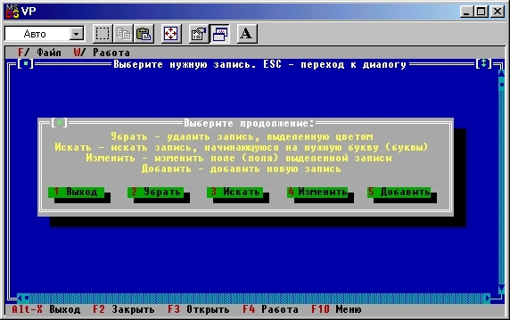

|
|
|
|
Диалоговое окно выбора режима
Подведем некоторые итоги. Мы создали программу, которая погружает пользователя в среду объектно-ориентированного диалога Turbo Vision: она поддерживает командные клавиши, работу с мышью, может сменить каталог или диск, выбрать нужный файл и загрузить его в окно просмотра. Не так плохо для 300 строк программного текста! Наша дальнейшая задача - реализовать другие режимы работы (поиск нужной строки, добавление и уничтожение строк, их изменение). Для двух из них (уничтожение и редактирование строки) в программе необходимо каким-то образом указать ту строку, с которой будет работать пользователь. Мы уже реализовали эту возможность, предусмотрев в окне просмотра текста управляемый указатель. Поэтому режим просмотра можно принять в качестве основного режима работы с данными. В связи с этим следует несколько изменить метод TNotebook-HandleEvent, предусмотрев в нем автоматический переход в режим просмотра данных в случае успешного открытия файла с данными:
Procedure TNotebook.HandleEvent(var Event: TEvent);
{Обработчик событий программы}
begin
Inherited HandleEvent(Event);
if Event.What = evCommand then
case Event.Command of
cmOpenFile:
begin
FileOpen;
if OpFileF then Work
end;
.......
end; {TNotebook.HandleEvent}
Как из режима просмотра данных перейти к другим режимам? Возможно несколько решений. Я предлагаю для этих целей воспользоваться командой cmClose (закрыть окно просмотра): в момент, когда пользователь в режиме просмотра данных нажмет клавишу Esc или воздействует мышью на кнопку «Закрыть окно», на экране должно раскрыться диалоговое окно выбора режима, предлагающее одно из пяти возможных продолжений:
Для реализации этой идеи в уже созданный нами обработчик событий TInterior.HandleEvent следует ввести обработку события cmClose:
const
{Команды для обработчиков событий:}
.......
cmCan=205;
cmDelete=206;
cmSearch = 207;
cmEdit = 208;
cmAdd = 209;
Function Control: Word; {Создает и использует диалоговое окно выбора режима работы)
begin
Control := cmCan
end; {Control}
{-----------------}
Procedure TInterior.HandleEvent (var Event: TEvent) ;
{Обработчик событий для окна данных}
Procedure DeleteItem;
{Удаляет указанный в Location элемент данных}
begin
end; {DeleteItem}
{-----------------}
Procedure AddItem(Edit: Boolean);
{Добавляет новый или редактирует старый элемент данных}
begin
end; {AddItem}
{-----------------}
Procedure SearchItem;
{Ищет нужный элемент}
begin
end; {SearchItem}
{-----------------}
var
R: TPoint; label Cls;
begin {TInterior.HandleEvent}
Inherited HandleEvent (Event) ;
case Event. What of evCommand:
case Event . Command of
cmClose:
begin
Cls:
case Control of{Получить команду из основного диалогового окна}
cmCan,
cmCancel:EndModal (cmCancel) ;
cmEdit:AddItem (True);
cmDelete:DeleteItem;
cmSearch:SearchItem;
cmAdd:AddItem (False);
end
end;
cmZoom: exit;
end;
evMouseDown: {Позиционировать мышью}
.....
evKeyDown: {Позиционировать клавишами + -}
case Event.KeyCode of
kbEsc: goto Cls;
kbGrayMinus: if Location > Delta.Y then
.....
end; {TInterior.HandleEvent}
В этом фрагменте мы расширили набор нестандартных команд (константы стпСап, ..., cmAdd), ввели новую функцию Control и предусмотрели необходимые процедуры в теле обработчика событий. Заметим, что режимы редактирования записи и добавления новой записи очень схожи по организации диалога с пользователем, поэтому он» реализуются в рамках одной процедуры AddItem и управляются параметром обращения к ней.
Функция Control используется для создания диалогового окна выбора продолжения. В качестве значения этой функции будет возвращаться одна из пяти новых команд. В начальном варианте функция возвращает команду стСап, что интерпретируется обработчиком событий как указание на завершение работы с диалоговым окном. Поэтому, если Вы вставите указанный текст в программу и запустите ее, поведение программы останется прежним.
Займемся реализацией функции Control. Она должна создать диалоговое окно выбора режима, получить с его помощью команду, идентифицирующую выбранный режим, и вернуть эту команду в качестве своего значения:
Function Control: Word;
{Получает команду из основного диалогового окна}
const
X = 1;
L = 12;
DX= 13;
But: array [0. .4]of String [13] = {Надписи на кнопках:}
('~1~ Выход ','~2~Убрать ','~3~ Искать ',
'~4~ Изменить ','~5~ Добавить ') ;
Txt: array [0..3]of String [52] = (
{Справочный текст:}
'Убрать - удалить запись, выделенную цветом', 'Искать - искать запись, начинающуюся нужными буквами', 'Изменить - изменить поле (поля) выделенной записи', 'Добавить - добавить новую запись'); var
R: TRect;
D: PDialog;
k: Integer;
begin
R.Assign(7,6,74,15) ;
D := New{PDialog,Init(R, 'Выберите продолжение:'));
with D do
begin
for k := 0 to 3 do {Вставляем поясняющий текст}
begin
R.Assign(l,l+k,65,2+k);
Insert(New(PStaticText,Init(R,#3+Txt[k])))
end;
for k := 0 to 4 do {Вставляем кнопки:}
begin
R.Assign(X+k*DX,6,X+k*DX+L,8);
Insert(New(PButton, Init(R,But[k],cmCan+k,bfNormal)))
end;
SelectNext(False); {Активизируем первую кнопку}
end;
Control := DeskTopA.ExecView(D); {Выполняем диалог}
end; {Control}
Сначала создается диалоговое окно с заданными размерами (чтобы программе стал доступен тип TDialog, укажите в предложении Uses модуль Dialogs). Затем в цикле
for k := 0 to 3 do
в окно вставляется поясняющий текст (см. рис.15.10).

Рис.15.10. Диалоговое окно функции Control
Этот текст не связан с диалогом и называется статическим. Для вставки статической строки в любой видимый элемент используется конструктор TStaticTextJnit, которому в качестве параметров передаются координаты строки и сама строка. Как Вы уже могли заметить, идентификаторы объектов в Turbo Vision начинаются на букву Т, а идентификаторы типов-указателей на экземпляры этих объектов начинаются на букву Р. Таким образом, PStaticText - это тип-указатель на экземпляр объекта TStaticText, поэтому оператор
Insert(New (PStaticText, Init(R,'Текст'))
помещает строку «Текст» на место, заданное координатами переменной R. Отметим, что если строка начинается на символ #3, то при выводе на экран она будет размещаться в центре прямоугольника R. Мы используем это соглашение и дополняем каждую выводимую строку этим символом. В цикле
for k := 0 to 4 do {Вставить кнопки:}
в окно вставляются пять кнопок. При их инициации используется то обстоятельство, что определенные нами команды cmCan, ..., cmAdd образуют непрерывное множество [205..209].
Особо следует остановится на операторе
SelectNext(False); {Активизируем 1-ю кнопку}
Дело в том, что по умолчанию активизируется тот элемент диалогового окна, который задан (вставлен в окно) последним. Чтобы изменить активность по умолчанию, используется вызов процедуры SelectNext, которая смещает активность к следующему элементу. Так как элементы образуют замкнутую цепь (от последнего элемента активность переходит к первому), параметр обращения к этой процедуре указывает направления смещения: если он имеет значение False, активным станет следующий в цепи элемент, если True - предыдущий.
Прежде, чем Вы попробуете запустить эту программу на счет, внесем в нее несколько изменений. Во-первых, пора убрать имитацию данных, показываемых в окне просмотра. Для этого в процедуре TInterior.ReadFile необходимо удалить строки
s := copy(ParamStr(O),1,pos('.',ParamStr(0)))+'pas';
assign(f,s);
.....
exit;
Надеюсь, что Вы заблаговременно подготовили остальной текст этого метода, если это не так, вставьте операторы
seek (DataFile, 0);
while not (EOF (DataFile) or LowMemory) do
begin
.....
end;
Location := 0
Во-вторых, обратили ли Вы внимание на то, что в процедуре TNotebook. Work указатель PW инициируется оператором
PW := New(PWorkWin, Init(R));
а динамическая память, выделенная для размещения экземпляра объекта TWorkWin, не возвращается обратно в кучу? Если да, то у Вас есть хорошие шансы избежать многих неприятностей при программировании в среде Turbo Vision. Конечно же, нам следовало где-то в программе позаботиться об удалении ненужного нам экземпляра объекта. Чтобы не усложнять программу, я не стал этого делать: если вставить оператор
Dispose(PW, Done)
сразу за оператором
DeskTop.Insert(PW)
то вновь созданное окно будет тут же удалено с экрана, поэтому оператор Dispose нужно разместить в обработчике событий TNotebook. HandleEvent (подумайте, где именно).
После включения диалогового окна в цепочку действий, связанных с инициацией PW, появилась возможность приостановить исполнение программы в процедуре Work: вместо оператора
DeskTop.Insert(PW)
вставьте следующие строки:
Control := DeskTop.ExecView(PW);
Dispose(PW, Done)
и добавьте описание переменной Control:
var
.....
Control: Word;
В отличие от процедуры Insert процедура ExecView не только помещает видимый элемент на экран, но и приостанавливает дальнейшее исполнение программы Work до тех пор, пока не закончится диалог с пользователем.
И, наконец, еще одно усовершенствование. Работа с программой станет удобнее, если сразу после чтения файла с данными она перейдет к их показу. Реализовать это очень просто: добавьте вызов процедуры Work в процедуру FileOpen следующим образом:
Procedure TNotebook.FileOpen;
..... begin
.....
if OpFileF then
begin
.....
Work{Переходим к работе}
end;
.....
end; {FileOpen}
Если Вы внесете в программу все описанные изменения и запустите ее на счет , то при попытке выйти из режима просмотра на экране будет развернуто диалоговое окно, показанное на рис. 15.10. «Нажатие» на любую кнопку этого окна не приводит ни к каким последствиям - наше окно пока откликается только на стандартную команду cmClose, связанную с клавишей Esc.
Файл с данными DataType пока еще не существует. Чтобы программа смогла нормально работать, в диалоговом окне открытия файла укажите произвольное имя, например MYDATA. После завершения работы программы будет создан пустой файл MYDATA.DAT.
|
|
|
|